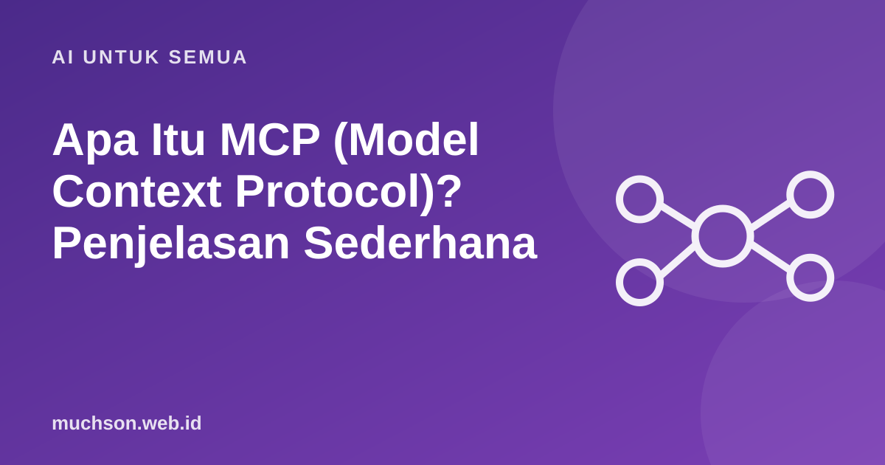

Beranda › Artikel › AI untuk Semua
AI untuk SemuaApa Itu MCP (Model Context Protocol)? Penjelasan Sederhana
MCP semakin sering muncul di pembahasan asisten AI. Gampangnya, ia seperti colokan standar: satu bentuk sambungan agar banyak alat bisa dihubungkan ke berbagai asisten AI tanpa membuat kabel khusus setiap kali.

Masalah yang diselesaikan
Sebelum ada standar, setiap asisten AI perlu integrasi khusus untuk tiap layanan: kalender, penyimpanan file, database, tracker tugas. Itu berarti pekerjaan berulang bagi pengembang dan pilihan terbatas bagi pengguna. Model Context Protocol (MCP) adalah standar terbuka yang membuat sisi layanan cukup menyediakan satu "server", sehingga aplikasi AI mana pun yang mendukung standar itu bisa memakainya.
Contoh pemakaian
- Asisten membaca dokumen proyek dan membuat ringkasan status.
- Asisten coding membuka database pengembangan untuk memahami struktur tabel sebelum menulis query.
- Asisten mengecek jadwal rapat, lalu menyusun agenda dan draf undangan.
- Asisten membuat tiket di tracker tugas berdasarkan catatan rapat.
Yang perlu diwaspadai
Tanya jawab
Apakah MCP hanya untuk programmer?
Pemasangannya biasanya oleh orang teknis, tetapi hasilnya bisa dirasakan semua pengguna asisten AI yang mendukungnya.
Apakah MCP sama dengan API?
Bukan. API adalah cara satu program meminta data dari program lain. MCP adalah standar yang memudahkan asisten AI menemukan dan memakai berbagai alat, sering dibangun di atas API.
Apakah MCP aman?
Standar saja tidak menjamin keamanan. Keamanan bergantung pada izin yang diberikan, sumber server, dan pengawasan pengguna.